环境：
-
一台PC(window/linux)
我下载到的是2.1版本（19\07\10下载的）
里面的文件是：
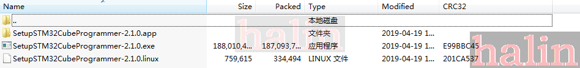
里面有3个文件，分别window、Linux、Mac下的，也就是说这个软件支持3个系统
安装
1. window
windows下直接双击即可，
2.Linux
Linux下需要在命令行中执行：
./SetupSTM32CubeProgrammer-2.0.0.linux
然后把安装目录添加到环境变量
使用
1.window
我的电脑是window7 64bit，
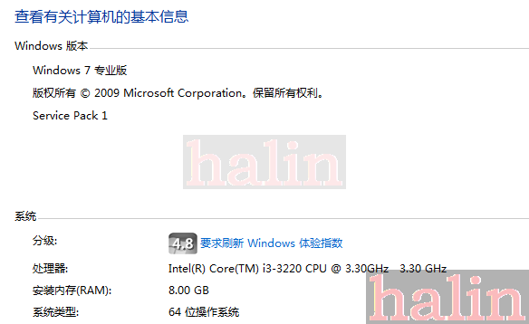
用STM32CubeProgrammer无法搜到DFU设备，可是我的电脑是有DFU设备的：
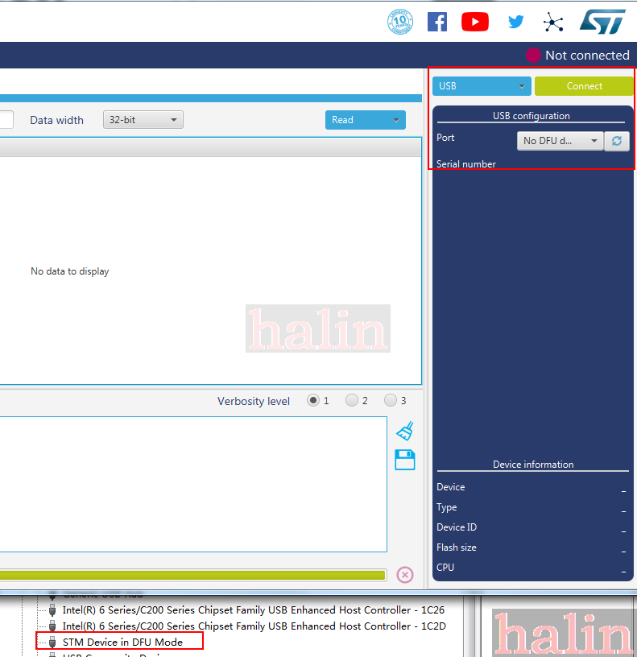
使用命令行的话，也找不到设备：
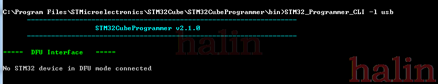
2.Linux
把设备插到电脑上，用lsusb查看USB设备：
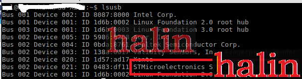
使用命令行打开：
halin@halin-PC:~/STMicroelectronics/STM32Cube/STM32CubeProgrammer/bin$ sudo ./STM32CubeProgrammer
由于我没有把安装目录添加到环境变量，我直接到安装目录运行，而且必须加上sudo,不然会找不到设备，打开后,连接方式选择USB，连接了设备后如下：
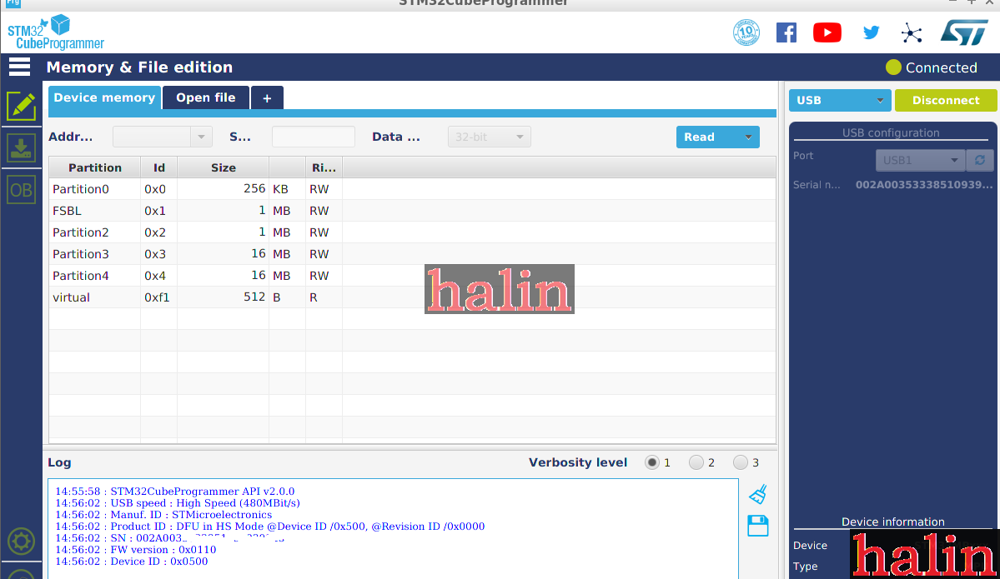
-
打开tsv文件
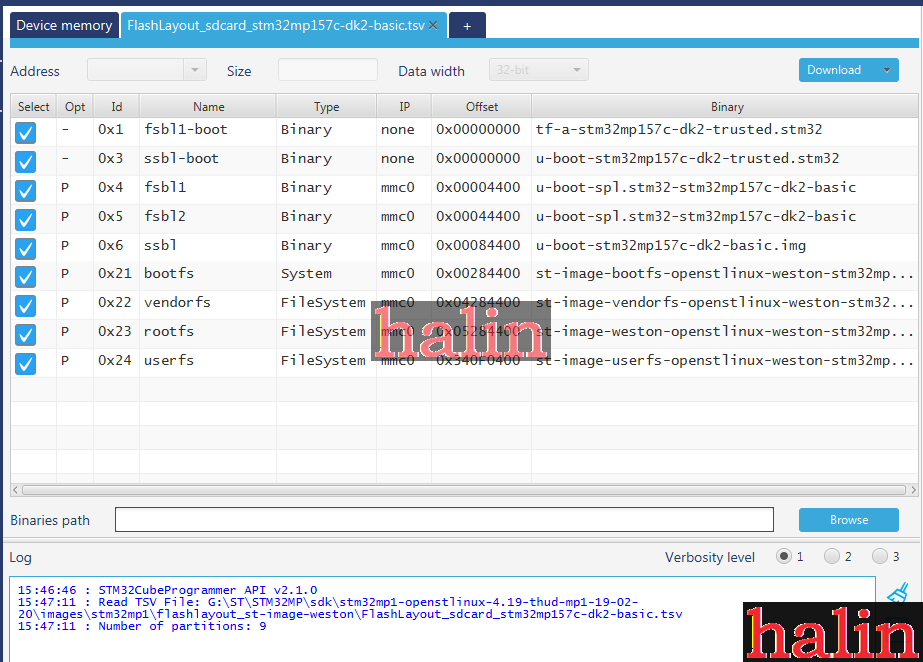
-
打开Image文件夹
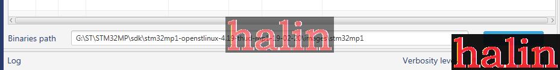
-
然后下载，下载成功后如下：
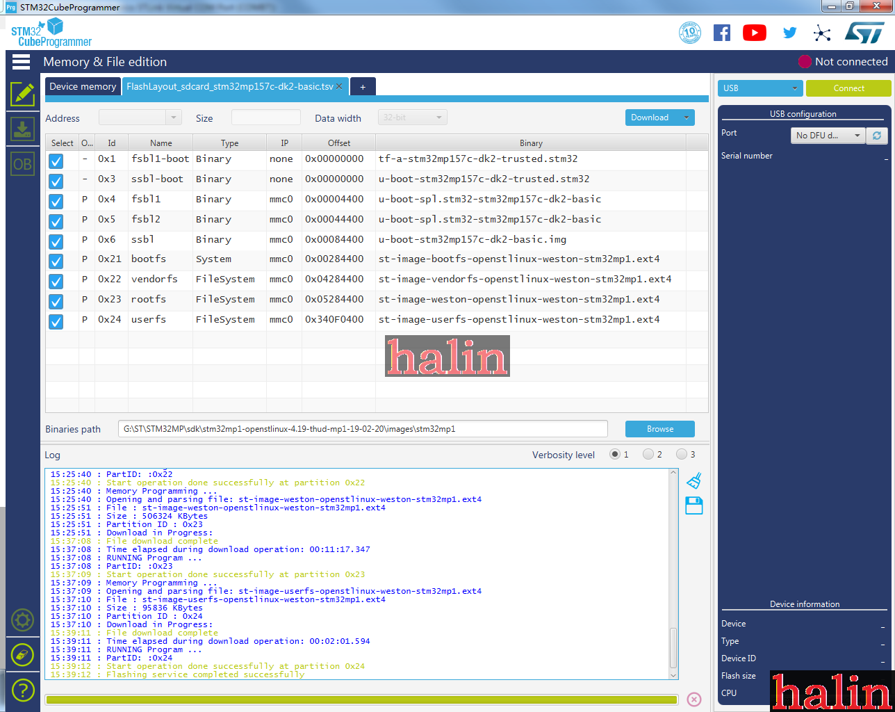
烧录过成功，如果DK2接了LCD，LCD会显示一些文字信息：
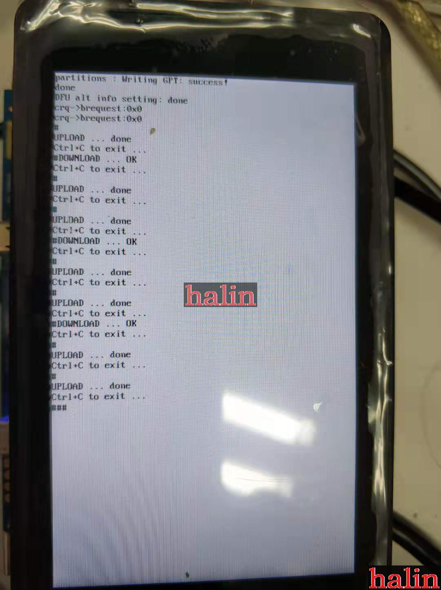
uart4(debug 口)也有输出一些信息：
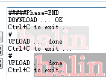
window 下安装驱动
因为之前看到的信息是通过USB DFU下载的话，STM32MP1X是处 于DFU mode，当我把DK2插入到windnow时，出现如下设备：
我以为就是对的，可是STM32CubeProgrammer无法连接该设备，后来认真看了下文档（How to proceed when the DFU driver installation fails on Windows host PC），才知道需要另外的驱动，
首先把原来的驱动删了，然后到STM32CubeProgrammer的安装目录下的Drivers\DFU_Driver，我电脑是：
C:\Program Files\STMicroelectronics\STM32Cube\STM32CubeProgrammer\Drivers\DFU_Driver
里面有个文件：STM32Bootloader.bat，双击打开就可以安装对应的驱动了，安装完后出现如下设备：
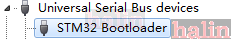
就可以在window下通过STM32CubeProgrammer给STM32MP15X下载固件了
参考：